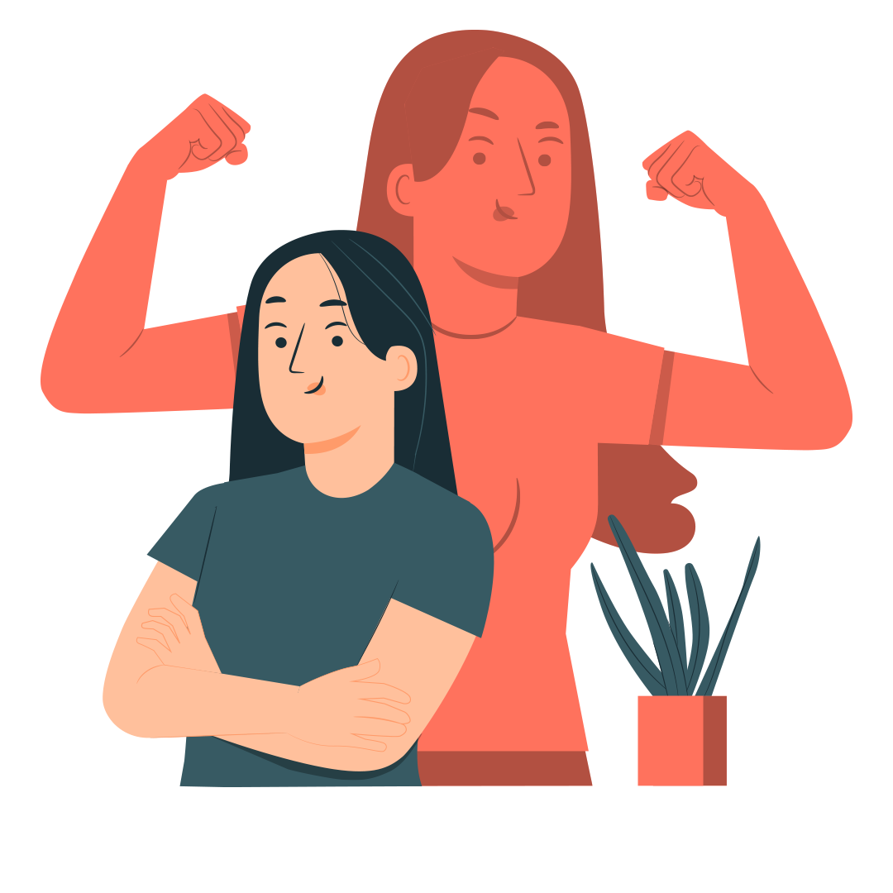
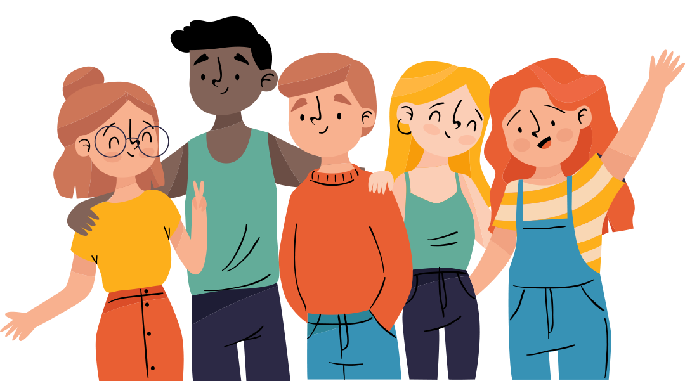

Tujuan
- Peserta didik dapat menjelaskan pengaruh zat aditif dan adiktif terhadap kesehatan siswa dapat menjelaskan penagruh zat aditif dan adiktif dengan tepat
- Peserta didik dapat menjelaskan tentang dampak penyalahgunaan zat aditif dan zat adiktif bagi kesehatan siswa
Upaya Pencegahan Dari Narkoba
Kegiatan Positif Cegah Narkoba
Mengenal dan Menilai Diri Sendiri
Mengenal dan menilai diri sendiri berarti anda menyadari akan kelemahan dan kekuatan. Kekurangan dan kelebihan, dan cita-cita atau tujuan hidup yang ingin kita capai. Dengan lebih mengenal diri sendiri, Anda akan dapat lebih mudah mengarahkan perilaku untuk mencapai tujuan hidup yang telah ditetapkan dan mencegah diri dari perilaku yang membuat anda tidak dapat meraih tujuan dalam hidup.
Meningkatkan Harga Diri
Harga diri adalah suara hati yang menunjukkan bahwa anda adalah seorang yang istimewa dan beharga, serta mampu mencapai cita-cita. Harga diri merupakan dasar dalam proses belajar, pembangunan kreativitas, tanggung jawab, dan hubungan positif dengan orang lain. Oleh karena itu, penting bagi anda untuk memiliki harga diri yang kuat. Orang yang memiliki harga diri yang tinggi, yang bangga dengan hasil karya sendiri maupun kolaborasi dengan teman, mampu bertindak mandiri, mampu menjalankan tanggung jawab dengan baik, berani menghadapi tantangan dengan penuh semangat, dan mau membantu orang lain. Meningkatkan Rasa Percaya Diri
Terampil mengatasi masalah dan mengambil keputusan
 Kita perlu belajar mengelola perasaan, seperti rasa takut, marah, khawatir, benci, malu, putus asa, dan sebagainya sehingga tidak lari dari masalah. Anda juga harus terampil dalam mengambil keputusan. Dalam mengambil keputusan, Anda harus menggunakan pemikiran yang logis mengenai sumber masalah dan alternative pemecahan masalah yang paling tepat dan bijaksana.Memilih pergaulan yang baik dan terampil menolak tawaran Narkoba
 Bagi seorang remaja, penerimaan atau diakui oleh kelompok sebayanya sangat penting. Adakalanya, ia berusaha untuk mengikuti hal-hal yang dikerjakan atau diikuti oleh teman-temannya untuk membuat mereka menyukainya. Banyak remaja yang mulai merokok, minum-minuman keras, bahkan menyalahgunakan narkoba akibat tekanan dari teman. Oleh karena itu, penting sekali bergaul dengan teman yang tidak menyalahgunakan narkoba. Selain itu, kita juga harus mampu menolah tawaran atau ajakan dari teman terhadap hal-hal yang negatif, seperti merokok maupun minum-minuman keras, apalagi penggunaan narkoba.
Percaya diri adalah gambaran keyakinan, keberanian, cara pandang, pemikiran, dan perasaan tentang dirinya sendiri dalam menghadapi suatu permasalahan. Jika kita memiliki rasa percaya diri yang baik, kita akan memiliki dorongan, kekuatan, dan keberanian untuk melakukan hal-hal positif, seperti siap dalam melaksanakan tugas diberikan.
Kesimpulan